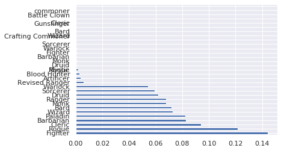
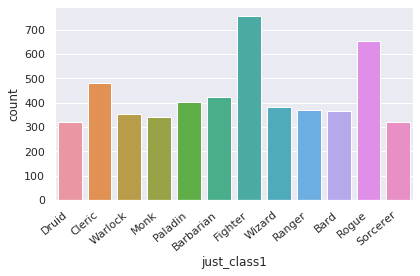
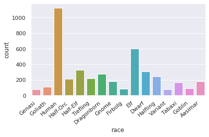
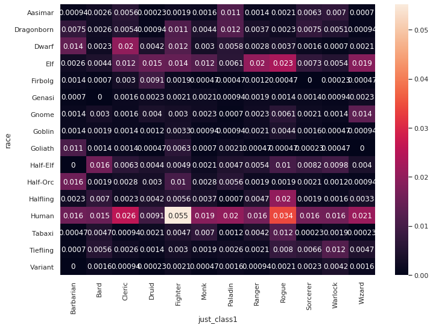

Dnd Data
Dungeons And Dragons and Stats
Dungeons and Dragons is a Tabletop Roleplaying game (RPG) produced by Wizards of the coast.
Data from https://github.com/oganm/dnddata
import pandas as pd
import plotly.graph_objects as go
import plotly.express as px
import seaborn as sns
import matplotlib.pyplot as plt
import numpy as np
import scipy.stats as stats
sns.set(style="darkgrid")
Lets load in the dataset. Note that this is a tab seperated table. We’ll use \t as the seperator to get it to load in right.
#dnd_df = pd.read_csv("https://raw.githubusercontent.com/ErikSeguinte/dndstats/master/docs/charTable.tsv", sep = '\t')
dnd_df = pd.read_csv('https://raw.githubusercontent.com/oganm/dnddata/master/data-raw/dnd_chars_unique.tsv', sep = '\t')
#dnd_df = pd.read_csv('dnddata/data-raw/dnd_chars_unique.tsv', sep = '\t')
dnd_df.columns.to_list()
['ip',
'finger',
'hash',
'name',
'race',
'background',
'date',
'class',
'justClass',
'subclass',
'level',
'feats',
'HP',
'AC',
'Str',
'Dex',
'Con',
'Int',
'Wis',
'Cha',
'alignment',
'skills',
'weapons',
'spells',
'castingStat',
'choices',
'country',
'countryCode',
'processedAlignment',
'good',
'lawful',
'processedRace',
'processedSpells',
'processedWeapons',
'levelGroup',
'alias']
print(dnd_df.shape)
dnd_df.head()
(4786, 36)
| ip | finger | hash | name | race | background | date | class | justClass | subclass | level | feats | HP | AC | Str | Dex | Con | Int | Wis | Cha | alignment | skills | weapons | spells | castingStat | choices | country | countryCode | processedAlignment | good | lawful | processedRace | processedSpells | processedWeapons | levelGroup | alias | |
|---|---|---|---|---|---|---|---|---|---|---|---|---|---|---|---|---|---|---|---|---|---|---|---|---|---|---|---|---|---|---|---|---|---|---|---|---|
| 0 | fe6a0db | dfa9438 | 9db89a1c2df98d839bb95fbb4337ffa1 | 5598141 | Fire Genasi | Hermit | 2019-12-31T20:40:46Z | Druid 20 | Druid | Circle of the Moon | 20 | NaN | 203 | 14 | 15 | 17 | 20 | 18 | 20 | 14 | NaN | Nature|Religion|Animal Handling|Medicine | Quarterstaff|Scimitar | NaN | Wis | NaN | United States | US | NaN | NaN | NaN | Genasi | NaN | Quarterstaff|Scimitar | 19-20 | heuristic_hamilton |
| 1 | fe6a0db | dfa9438 | c4859de3f51355111d33c17c231b1f1f | 5b7f0c0 | Kenku | Acolyte | 2019-12-31T18:01:13Z | Cleric 20 | Cleric | Life Domain | 20 | Healer|Linguist | 180 | 18 | 11 | 11 | 16 | 14 | 16 | 11 | NaN | Acrobatics|Sleight of Hand|Religion|Insight|Me... | Mace|Crossbow, light | Bless*1|Cure Wounds*1|Lesser Restoration*2|Spi... | Wis | NaN | United States | US | NaN | NaN | NaN | Kenku | Bless*1|Cure Wounds*1|Lesser Restoration*2|Spi... | Mace|Crossbow, Light | 19-20 | pedantic_vaughan |
| 2 | fbbc565 | acf7615 | 0ca83c2f792caad71a28e27264c82a3e | ad4efc7 | Triton | Haunted One | 2019-12-18T22:30:54Z | Warlock 20 | Warlock | The Great Old One | 20 | Spell Sniper | 206 | 14 | 20 | 18 | 20 | 10 | 12 | 20 | NaN | Arcana|Investigation|Religion|Survival | Trident | NaN | Cha | eldritch invocations/Armor of Shadows*Agonizin... | United States | US | NaN | NaN | NaN | Triton | NaN | Trident | 19-20 | optimistic_hawking |
| 3 | 771e3c1 | acf7615 | a425e37f4210bee779f131cb07ef05a3 | 14b10ec | Triton | Mercenary Veteran | 2019-12-15T17:39:15Z | Monk 20 | Monk | Way of the Kensei | 20 | NaN | 157 | 19 | 20 | 20 | 15 | 11 | 18 | 13 | NaN | Athletics|Acrobatics|Stealth|Persuasion | Unarmed Strike|Longbow|Trident | NaN | Wis | NaN | United States | US | NaN | NaN | NaN | Triton | NaN | Unarmed Strike|Longbow|Trident | 19-20 | jovial_bassi |
| 4 | 1c797fe | dbb4eaa | 401ef00cd4e04844a75d4ca084e7b309 | 8090ffe | Goliath | Noble | 2019-12-08T12:31:07Z | Paladin 20 | Paladin | Oath of Conquest | 20 | NaN | 279 | 20 | 29 | 18 | 24 | 18 | 18 | 20 | NaN | Athletics|History|Persuasion | Warhammer|Javelin | Armor of Frost*1|Command*1|Hold Person*2|Spiri... | Cha | fighting style/Dueling | United States | US | NaN | NaN | NaN | Goliath | *|Command*1|Hold Person*2|Spiritual Weapon*2|B... | Warhammer|Javelin | 19-20 | fervent_rubin |
dnd_df = dnd_df.drop(['ip', 'finger', 'hash', 'name', 'countryCode', 'country', 'justClass', 'alias', 'levelGroup', 'processedRace'], axis=1)
The maintainer of this Dataset already did some processing and cleanup. (See the Processed* columns, but we’re going to ignore those. This is supposed to be a learning experience, right?
Lets start with classes. What do these values look like?
pd.set_option('display.max_rows', 50)
pd.set_option('min_rows', 20)
pd.options.display.max_rows = 50
dnd_df['class'].value_counts()
Rogue 1 157
Fighter 1 133
Cleric 1 129
Bard 1 97
Fighter 3 97
Paladin 1 96
Wizard 1 94
Barbarian 1 91
Ranger 1 89
Sorcerer 1 82
...
Paladin 17 1
Fighter 3|Warlock 2|Bard 10 1
Sorcerer 13 1
Blood Hunter 7 1
\nSorcerer 5 1
Cleric 10|Paladin 5 1
Paladin 7|Warlock 1 1
Rogue 8|Fighter 1 1
Cleric 1|Wizard 13 1
Rogue 6|Fighter 4 1
Name: class, Length: 732, dtype: int64
Looks like there are a few issues. The first is that Class and level have been combined. So a 1st level wizard is in listed as Wizard 1. We’ll want to split those up into class and level.
The next thing is multiclassing. Someone can be wizard 1 and barbarian 2. In the data, they are seperated by the | character. We’ll start by cleaning this up.
First, we’ll use the str.split() function of the pd.DataFrame class to turn this string into a list of strings. Note that rows with only a single class are still turned into a list with 1 element. While we’re at it, let’s clean it of stray spaces or newlines, and drop anyone with more than 2 classes.
dnd_df['class'] = dnd_df['class'].str.split('|')
dnd_df['class']
0 [Druid 20]
1 [Cleric 20]
2 [Warlock 20]
3 [Monk 20]
4 [Paladin 20]
5 [Barbarian 20]
6 [Warlock 20]
7 [Warlock 20]
8 [Paladin 20]
9 [Paladin 20]
...
4776 [Fighter 1, Wizard 1]
4777 [Fighter 1, Rogue 1]
4778 [Fighter 1, Barbarian 1]
4779 [Monk 1, Fighter 1]
4780 [Barbarian 1, Fighter 1]
4781 [Rogue 1, Warlock 1]
4782 [Bard 1, Sorcerer 1]
4783 [Rogue 1, Ranger 1]
4784 [Fighter 1, Rogue 1]
4785 [Fighter 1, Barbarian 1]
Name: class, Length: 4786, dtype: object
# Drop anyone with more than 2 classes
valid_multiclass = dnd_df['class'].str.len() <= 2
dnd_df = dnd_df[valid_multiclass]
# Split Class list into 2 columns, class 1 and 2
dnd_df[['class1', 'class2']] = pd.DataFrame(dnd_df['class'].values.tolist(), index = dnd_df.index)
dnd_df[['just_class1', 'just_level1']] = pd.DataFrame(dnd_df['class1'].str.rsplit(" ",1, expand = True).values, index = dnd_df.index)
dnd_df[['just_class2', 'just_level2']] = pd.DataFrame(dnd_df['class2'].str.rsplit(" ",1, expand = True).values, index = dnd_df.index)
dnd_df['just_class1'].value_counts(normalize=True).plot(kind='barh');

There’s a lot in there! Let’s filter our df to only include the top 12 or so classes.
def graph_counts(df, label):
ax = sns.countplot(x = label, data=df,)
ax.set_xticklabels(ax.get_xticklabels(), rotation=40, ha="right")
plt.tight_layout()
plt.show();
def graph_series(s):
ax = sns.countplot(x = s.index, data=s)
ax.set_xticklabels(ax.get_xticklabels(), rotation=40, ha="right")
plt.tight_layout()
plt.show();
def clean_string(s:str):
if isinstance(s, str):
split = s.split(' ')
return split[-1].strip().title()
second_class_df = dnd_df[dnd_df['just_class2'].notnull()].copy()
second_class_df[['just_class1', 'just_level1']] = second_class_df[['just_class2', 'just_level2']].copy()
- Adding second class to the bottom of first class. This way, a warlock/fighter would count as both a fighter and a warlock in the data.
dnd_df = pd.concat([dnd_df, second_class_df]).copy()
dnd_df = dnd_df.drop(['date','class', 'processedWeapons','processedSpells', 'just_class2', 'just_level2'],axis = 1)
dnd_df['just_class1'] = dnd_df['just_class1'].apply(clean_string)
dnd_df['just_class1'].value_counts()
Fighter 756
Rogue 653
Cleric 481
Barbarian 421
Paladin 401
Wizard 381
Ranger 368
Bard 365
Warlock 351
Monk 340
Sorcerer 320
Druid 319
Artificer 19
Hunter 14
Mystic 11
Commoner 2
Gunslinger 1
Clown 1
1
Name: just_class1, dtype: int64
unusual_classes = dnd_df['just_class1'].value_counts()[12:].index.to_list()
unusual_classes
['Artificer', 'Hunter', 'Mystic', 'Commoner', 'Gunslinger', 'Clown', '']
dnd_df = dnd_df[~(dnd_df['just_class1'].isin(unusual_classes))]
graph_counts(dnd_df, 'just_class1')

race_and_class = pd.crosstab(dnd_df['just_class1'], dnd_df['race']).T
race_and_class
| just_class1 | Barbarian | Bard | Cleric | Druid | Fighter | Monk | Paladin | Ranger | Rogue | Sorcerer | Warlock | Wizard |
|---|---|---|---|---|---|---|---|---|---|---|---|---|
| race | ||||||||||||
| 1/2 Elf--Var. | 0 | 0 | 0 | 0 | 0 | 0 | 1 | 0 | 0 | 0 | 0 | 0 |
| Aarakocra | 4 | 2 | 6 | 2 | 0 | 8 | 2 | 12 | 2 | 1 | 4 | 2 |
| Aasimar | 2 | 0 | 1 | 0 | 0 | 1 | 2 | 0 | 2 | 3 | 1 | 0 |
| Air Genasi | 0 | 0 | 3 | 2 | 1 | 3 | 0 | 6 | 3 | 1 | 2 | 2 |
| Animal Hybrid | 2 | 0 | 1 | 0 | 1 | 3 | 2 | 0 | 1 | 0 | 1 | 1 |
| Animal Hybrid (Bear) | 1 | 0 | 0 | 0 | 0 | 0 | 0 | 0 | 0 | 0 | 0 | 0 |
| Beast | 0 | 0 | 0 | 1 | 0 | 0 | 0 | 0 | 0 | 0 | 0 | 0 |
| Beasthide | 0 | 0 | 0 | 1 | 0 | 1 | 0 | 0 | 0 | 0 | 0 | 0 |
| Birdfolk | 1 | 0 | 1 | 1 | 1 | 0 | 0 | 0 | 1 | 0 | 0 | 0 |
| Bugbear | 11 | 2 | 0 | 2 | 12 | 3 | 3 | 1 | 3 | 1 | 0 | 1 |
| ... | ... | ... | ... | ... | ... | ... | ... | ... | ... | ... | ... | ... |
| Wolf | 0 | 0 | 0 | 0 | 1 | 0 | 0 | 0 | 0 | 0 | 0 | 0 |
| Wood Elf | 6 | 2 | 28 | 49 | 23 | 38 | 2 | 70 | 37 | 5 | 4 | 6 |
| Yordle | 0 | 0 | 0 | 0 | 0 | 0 | 0 | 0 | 0 | 0 | 1 | 0 |
| Yuan-Ti | 0 | 0 | 1 | 0 | 0 | 0 | 0 | 0 | 0 | 0 | 0 | 0 |
| Yuan-ti Pureblood | 0 | 0 | 1 | 0 | 0 | 0 | 0 | 0 | 0 | 0 | 0 | 0 |
| firbolg | 1 | 0 | 0 | 0 | 0 | 0 | 0 | 0 | 0 | 0 | 0 | 0 |
| moon Elf | 0 | 0 | 0 | 1 | 0 | 0 | 0 | 0 | 0 | 0 | 0 | 0 |
| naga | 0 | 0 | 0 | 0 | 0 | 0 | 0 | 1 | 1 | 0 | 0 | 0 |
| warforged (envoy) | 0 | 0 | 0 | 0 | 1 | 0 | 0 | 0 | 0 | 0 | 0 | 0 |
| 👨 Human | 0 | 1 | 0 | 0 | 0 | 0 | 0 | 0 | 0 | 0 | 0 | 1 |
189 rows × 12 columns
Races are mixed in with subraces, which makes it more difficult to classify.
Wood Elf should really just be Elf, with a subrace of Wood Elf
For the most part, we can classify them by splitting them and taking the last word.
And we’ll drop any unusual races too
def clean_race(s:str):
if isinstance(s, str):
split = s.split(' ')
return split[-1].strip().title()
dnd_df['race'] = dnd_df['race'].apply(clean_race)
dnd_df
| race | background | subclass | level | feats | HP | AC | Str | Dex | Con | Int | Wis | Cha | alignment | skills | weapons | spells | castingStat | choices | processedAlignment | good | lawful | class1 | class2 | just_class1 | just_level1 | |
|---|---|---|---|---|---|---|---|---|---|---|---|---|---|---|---|---|---|---|---|---|---|---|---|---|---|---|
| 0 | Genasi | Hermit | Circle of the Moon | 20 | NaN | 203 | 14 | 15 | 17 | 20 | 18 | 20 | 14 | NaN | Nature|Religion|Animal Handling|Medicine | Quarterstaff|Scimitar | NaN | Wis | NaN | NaN | NaN | NaN | Druid 20 | None | Druid | 20 |
| 1 | Kenku | Acolyte | Life Domain | 20 | Healer|Linguist | 180 | 18 | 11 | 11 | 16 | 14 | 16 | 11 | NaN | Acrobatics|Sleight of Hand|Religion|Insight|Me... | Mace|Crossbow, light | Bless*1|Cure Wounds*1|Lesser Restoration*2|Spi... | Wis | NaN | NaN | NaN | NaN | Cleric 20 | None | Cleric | 20 |
| 2 | Triton | Haunted One | The Great Old One | 20 | Spell Sniper | 206 | 14 | 20 | 18 | 20 | 10 | 12 | 20 | NaN | Arcana|Investigation|Religion|Survival | Trident | NaN | Cha | eldritch invocations/Armor of Shadows*Agonizin... | NaN | NaN | NaN | Warlock 20 | None | Warlock | 20 |
| 3 | Triton | Mercenary Veteran | Way of the Kensei | 20 | NaN | 157 | 19 | 20 | 20 | 15 | 11 | 18 | 13 | NaN | Athletics|Acrobatics|Stealth|Persuasion | Unarmed Strike|Longbow|Trident | NaN | Wis | NaN | NaN | NaN | NaN | Monk 20 | None | Monk | 20 |
| 4 | Goliath | Noble | Oath of Conquest | 20 | NaN | 279 | 20 | 29 | 18 | 24 | 18 | 18 | 20 | NaN | Athletics|History|Persuasion | Warhammer|Javelin | Armor of Frost*1|Command*1|Hold Person*2|Spiri... | Cha | fighting style/Dueling | NaN | NaN | NaN | Paladin 20 | None | Paladin | 20 |
| 5 | Human | Sailor | Path of the Storm Herald | 20 | Polearm Master|Tough | 301 | 22 | 24 | 17 | 24 | 13 | 16 | 12 | NaN | Athletics|Animal Handling|Perception|Survival | Glaive|Javelin|Javelin | NaN | Int | NaN | NaN | NaN | NaN | Barbarian 20 | None | Barbarian | 20 |
| 6 | Half-Orc | Sailor | The Great Old One | 20 | War Caster|Actor|Observant | 202 | 13 | 20 | 13 | 18 | 14 | 15 | 17 | NaN | Athletics|Arcana|Investigation|Perception|Dece... | Falchion (Scimitar)|Eldritch Blast | Chill Touch*0|Eldritch Blast*0|Mage Hand*0|Min... | Cha | pact boon/Pact of the Blade|eldritch invocatio... | NaN | NaN | NaN | Warlock 20 | None | Warlock | 20 |
| 7 | Triton | Charlatan | The Great Old One | 20 | Spell Sniper | 209 | 13 | 10 | 17 | 20 | 10 | 11 | 20 | NaN | Sleight of Hand|Arcana|Religion|Deception | Dagger | NaN | Cha | eldritch invocations/Agonizing Blast*Devil's S... | NaN | NaN | NaN | Warlock 20 | None | Warlock | 20 |
| 8 | Half-Elf | Acolyte | Oath of Vengeance | 20 | NaN | 255 | 24 | 20 | 14 | 20 | 14 | 15 | 20 | CN | Athletics|Arcana|Religion|Insight|Persuasion | Longsword|Longsword|Longsword|Sparky Sparky Bo... | Bane*1|Hunter’s Mark*1|Divine Favor*1|Sheild O... | Cha | fighting style/Protection | CN | NaN | NaN | Paladin 20 | None | Paladin | 20 |
| 9 | Tiefling | Acolyte | OathBreaker | 20 | NaN | 225 | 19 | 18 | 15 | 16 | 16 | 8 | 12 | NaN | Athletics|Religion|Insight|Intimidation | Battleaxe|Dagger | Hellish Rebuke*1|Inflict Wounds*1|Crown of Mad... | Cha | fighting style/Defense|tiefling variants menu/... | NaN | NaN | NaN | Paladin 20 | None | Paladin | 20 |
| ... | ... | ... | ... | ... | ... | ... | ... | ... | ... | ... | ... | ... | ... | ... | ... | ... | ... | ... | ... | ... | ... | ... | ... | ... | ... | ... |
| 4776 | Human | Knight | | | 2 | War Caster | 21 | 19 | 16 | 11 | 16 | 14 | 10 | 10 | CG | Athletics|Arcana|Medicine|Perception|Persuasion | Longsword|Handaxe | Light*0|Green Flame Blade*0|Prestedigitation*0... | Int | fighting style/Defense | CG | NaN | NaN | Fighter 1 | Wizard 1 | Wizard | 1 |
| 4777 | Human | Outlander | | | 2 | Grappler | 19 | 12 | 15 | 13 | 14 | 8 | 10 | 14 | CG | Athletics|Acrobatics|Insight|Survival|Intimida... | Longbow|Shortsword|Shortsword|Handaxe | NaN | Int | expertise/Insight*Athletics|fighting style/Two... | CG | NaN | NaN | Fighter 1 | Rogue 1 | Rogue | 1 |
| 4778 | Human | Outlander | | | 2 | Dual Wielder | 21 | 15 | 16 | 12 | 14 | 8 | 10 | 14 | NaN | Athletics|Stealth|Perception|Survival|Intimida... | Battleaxe|Battleaxe Rage | NaN | Int | fighting style/Two-Weapon Fighting | NaN | NaN | NaN | Fighter 1 | Barbarian 1 | Barbarian | 1 |
| 4779 | Tabaxi | Custom | | | 2 | NaN | 16 | 15 | 12 | 16 | 12 | 10 | 14 | 12 | NaN | Athletics|Acrobatics|Stealth|Religion|Insight|... | Shortsword|Dart|Unarmed strike | NaN | Int | fighting style/Dueling | NaN | NaN | NaN | Monk 1 | Fighter 1 | Fighter | 1 |
| 4780 | Lizardfolk | Barbarian Tribe Member | | | 2 | NaN | 24 | 15 | 14 | 14 | 16 | 9 | 14 | 8 | NaN | Athletics|Nature|Animal Handling|Survival|Inti... | Battleaxe|Battleaxe | NaN | Int | fighting style/Two-Weapon Fighting | NaN | NaN | NaN | Barbarian 1 | Fighter 1 | Fighter | 1 |
| 4781 | Genasi | Haunted One | |The Undying | 2 | NaN | 19 | 14 | 8 | 16 | 16 | 14 | 8 | 13 | NaN | Acrobatics|Sleight of Hand|Stealth|Investigati... | NaN | Spare the Dying*0|Mage Hand*0|Chill Touch*0|Un... | Int | expertise/Stealth*Acrobatics | NaN | NaN | NaN | Rogue 1 | Warlock 1 | Warlock | 1 |
| 4782 | Kenku | Entertainer | |Shadow Magic | 2 | NaN | 14 | 14 | 10 | 17 | 12 | 8 | 14 | 14 | NaN | Acrobatics|Investigation|Insight|Perception|De... | Rapier|Dagger | Minor Image*0|Vicious Mockery*0|Message*0|Ligh... | Cha | NaN | NaN | NaN | NaN | Bard 1 | Sorcerer 1 | Sorcerer | 1 |
| 4783 | Human | Urchin | | | 2 | NaN | 18 | 14 | 9 | 16 | 15 | 11 | 13 | 14 | NaN | Sleight of Hand|Stealth|Investigation|Insight|... | Shortsword|Shortbow|Dagger | NaN | Int | expertise/Thieves' Tools*Stealth | NaN | NaN | NaN | Rogue 1 | Ranger 1 | Ranger | 1 |
| 4784 | Human | Noble | | | 2 | NaN | 15 | 16 | 12 | 13 | 10 | 11 | 11 | 17 | NaN | Acrobatics|History|Investigation|Animal Handli... | Rapier|Dagger | NaN | Int | fighting style/Dueling|expertise/Investigation... | NaN | NaN | NaN | Fighter 1 | Rogue 1 | Rogue | 1 |
| 4785 | Dwarf | Criminal | | | 2 | NaN | 23 | 16 | 16 | 10 | 16 | 10 | 10 | 14 | NaN | Stealth|History|Perception|Deception | Greatsword|Whip|Handaxe | NaN | Int | fighting style/Great Weapon Fighting | NaN | NaN | NaN | Fighter 1 | Barbarian 1 | Barbarian | 1 |
5156 rows × 26 columns
counts = dnd_df['race'].value_counts()
counts
Human 1126
Elf 603
Half-Elf 325
Dwarf 309
Dragonborn 274
Halfling 246
Tiefling 218
Half-Orc 214
Aasimar 179
Gnome 178
...
Ancestor 1
Half-Elf(Drow) 1
Leonine 1
Orco 1
Glasya 1
Pureblood 1
Dreamtouched 1
(Volvo'S) 1
Tribe 1
Stride 1
Name: race, Length: 139, dtype: int64
I think we might have a few home brew or other unusual races. Lets say keep the top 16 races
unusual_races = counts[16:].index.tolist()
dnd_df = dnd_df[~(dnd_df['race'].isin(unusual_races))]
graph_counts(dnd_df, 'race')

race_and_class = pd.crosstab(dnd_df['race'], dnd_df['just_class1'])
race_and_class_margins = pd.crosstab(dnd_df['race'], dnd_df['just_class1'], margins = True)
race_and_class_normalized = pd.crosstab(dnd_df['race'], dnd_df['just_class1'], normalize='all')
race_and_class_margins
| just_class1 | Barbarian | Bard | Cleric | Druid | Fighter | Monk | Paladin | Ranger | Rogue | Sorcerer | Warlock | Wizard | All |
|---|---|---|---|---|---|---|---|---|---|---|---|---|---|
| race | |||||||||||||
| Aasimar | 4 | 11 | 24 | 1 | 8 | 7 | 49 | 6 | 9 | 27 | 30 | 3 | 179 |
| Dragonborn | 32 | 11 | 23 | 4 | 49 | 19 | 52 | 16 | 10 | 32 | 22 | 4 | 274 |
| Dwarf | 60 | 10 | 85 | 18 | 51 | 13 | 25 | 12 | 16 | 7 | 3 | 9 | 309 |
| Elf | 11 | 19 | 53 | 63 | 61 | 51 | 26 | 86 | 99 | 31 | 23 | 80 | 603 |
| Firbolg | 6 | 3 | 13 | 39 | 8 | 2 | 2 | 5 | 2 | 0 | 1 | 2 | 83 |
| Genasi | 3 | 0 | 7 | 10 | 9 | 9 | 4 | 8 | 6 | 6 | 4 | 10 | 76 |
| Gnome | 6 | 13 | 7 | 17 | 13 | 10 | 3 | 10 | 26 | 9 | 6 | 58 | 178 |
| Goblin | 6 | 8 | 6 | 5 | 14 | 4 | 4 | 9 | 19 | 7 | 2 | 4 | 88 |
| Goliath | 47 | 6 | 6 | 2 | 27 | 3 | 9 | 2 | 2 | 1 | 2 | 0 | 107 |
| Half-Elf | 0 | 68 | 27 | 19 | 21 | 9 | 20 | 23 | 44 | 35 | 42 | 17 | 325 |
| Half-Orc | 67 | 8 | 12 | 13 | 44 | 12 | 24 | 8 | 8 | 9 | 5 | 4 | 214 |
| Halfling | 10 | 30 | 10 | 18 | 24 | 16 | 3 | 20 | 86 | 8 | 7 | 14 | 246 |
| Human | 67 | 63 | 110 | 39 | 236 | 81 | 86 | 70 | 146 | 69 | 68 | 91 | 1126 |
| Tabaxi | 2 | 20 | 4 | 9 | 20 | 30 | 5 | 18 | 52 | 1 | 8 | 1 | 170 |
| Tiefling | 3 | 24 | 11 | 6 | 13 | 8 | 11 | 9 | 34 | 28 | 51 | 20 | 218 |
| Variant | 0 | 7 | 4 | 1 | 9 | 2 | 7 | 4 | 9 | 10 | 18 | 7 | 78 |
| All | 324 | 301 | 402 | 264 | 607 | 276 | 330 | 306 | 568 | 280 | 292 | 324 | 4274 |
sns.set(rc={'figure.figsize':(11.7,8.27)})
sns.heatmap(race_and_class_normalized, annot = True)
<matplotlib.axes._subplots.AxesSubplot at 0x7f902a327668>

fig = go.Figure(
data = go.Heatmap(
z=race_and_class,
x=race_and_class.columns,
y=race_and_class.index)
)
fig.update_layout(
autosize=False,
width = 800,
height=800
)
fig.show()